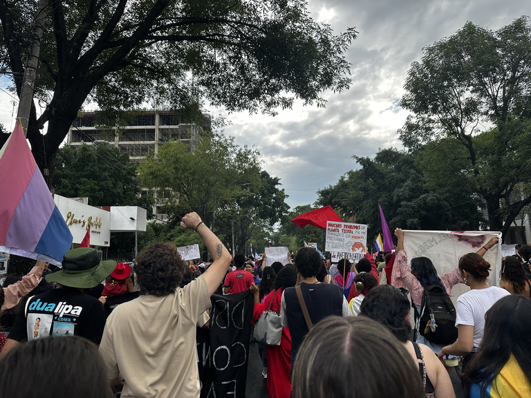
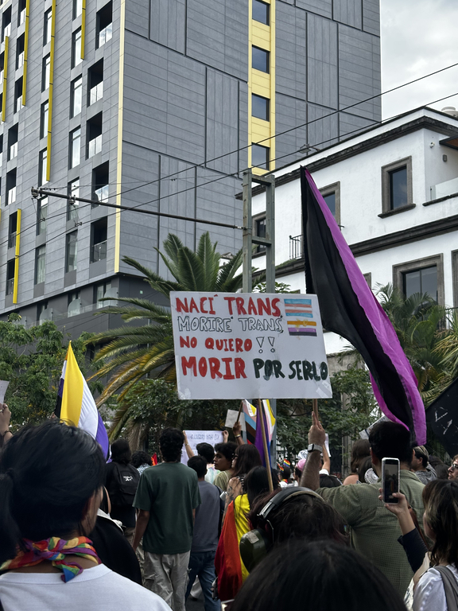
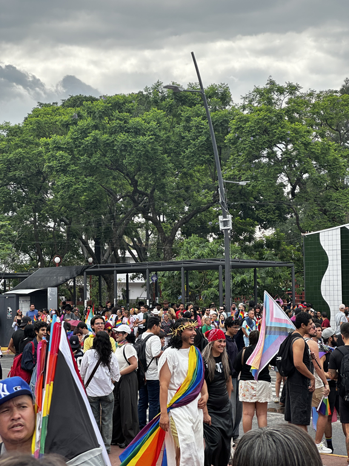

28-06-2026
By Sofia Maldonado
This is an english translation of an article that I originally wrote for my spanish-language blog. If you are interested you can check the original post here
On the early hours of June 28th, 1969, in the Greenwich Village of New York City, a group made up primarily of gay man and who we would now consider trans women resisted a raid by the NYPD to remove them from the Stonewall, one of the few but more recognizable gay bars in the city. This moment, remembered today as the Stonewall Riots, was the cradle of the modern LGBT movement. A year later conmemorative marches took place in New York City, Chicago and Los Angeles. These were small events (the NYC march only covered 5 blocks according to The New Yorker) and were also the first modern gay pride parades.

All pictures were taken by me :)
I start my essay with this to remind you of how new our movement is, today known as the LGBT movement, the most successful in history to emancipate hundreds of millions of sexual orientation and gender identity dissidents. Our fight has existed for thousands of years, of course, but the ways in which we express ourselves are truly modern. The now iconic gay pride flag was created in 1978: its creator, Gilbert Baker, only left us less than a decade ago. The transgender pride flag, created by veteran Monica Helms, was adopted until 1999. She is still alive and continues to do activism. Other terms like "sexual inversion", "transsexual", "homophilic" and of course "queer" have come and gone or evolved to adapt to the new dissidences and subgroups that have joined us since then.
This year, 57 years later, I was able to go to my first pride parade in my hometown of Guadalajara, a city that has welcomed me and my identity with pretty open arms. Even though I've known I am at least queer for over 6 years, I had never gone to a parade until now. I really don't have good reasons for it, it was meant to be until now I suppose.
There were two related events in Guadalajara this year, same as last year. First, the big parade/festival organized by Guadalajara Pride with more organization and "legitimacy". There was also a Counter-march, with a slightly different route that was more of a protest of the injustices that LGBT folks continue to experience in daily life.
I went to the counter-march with four of my friends because we believe in its legitimacy and necessity. But I've also reflected on what the "normal" parade represents for a subset of our community that I think about a lot: older gay and trans people.
I am 21 years old. The political climate and the rights I have as a queer person (and particularly as a trans person) are radically different to what people before me had. I owe them countless comforts, both social and legal, that I now enjoy. This year I was able to change my legal name to Sofia because of the years of pressure and activism by them. They don't know me and will never meet me, but they still fought for me, and I grant them my eternal gratitude.

I give the title of "festival" to the general parade because that's how it felt: like a celebration. Even though I preferred to attend the actual protest, I obviously understand the value of celebration in our community. And the people I saw celebrating the most were those that came before us: the ones who fought so much previously that now enjoy of much different prospects than those before. They, just like me or even more so, have all the right to celebrate. I saw gay moms and dads with their kids, celebrating something as monumental and also so basic as being able to raise children as their own just like any straight couple. I saw trans women who were around the same age as my mom, still here despite all the difficulties they've suffered in their lives and can now express themselves more freely. They were the most beautiful women of the parade.
As I stated above, I don't consider these people to be "out of the fight" or something like that for wanting to make a festival out of pride. One of the (many) people I saw there was a man that I won't name that works at my closest civil registry. I know him because he was the one who helped me the most when changing my legal gender, and has been a massive help both to me and my parents with all of the bureaucracy that has come from the change. He has done more to guarantee my right to my identity than almost anyone else, and I was glad to see him celebrating his own queerness with others like him who probably suffered a lot more to do so.
Most people at the counter-march were younger, around my age or even younger, and that is totally understandable and natural. "Ser jóven y no ser revolucionario es una contradicción hasta biológica" (Being young and not being a revolutionary is an almost biological contradiction) once proclaimed the great Salvador Allende, the first democratically elected socialist leader in the world, in a speech right here in Guadalajara. Now it's our turn to take up the torch given to us by our ancestors to continue fighting and protecting our rights that they've worked so hard for, and the ones we still haven't got. They oughta enjoy the world they've created, one where people like me can live more free and enjoy more rights and be more proud of who we are.
For the rest of my (hopefully long) life I will continue to attend pride parades, either here or wherever life takes me. And I will recognize them as both the act of protest they are and as the thankful and incredible celebration of hundreds of millions of people of the beauty of our bodies, our identities and our love.
